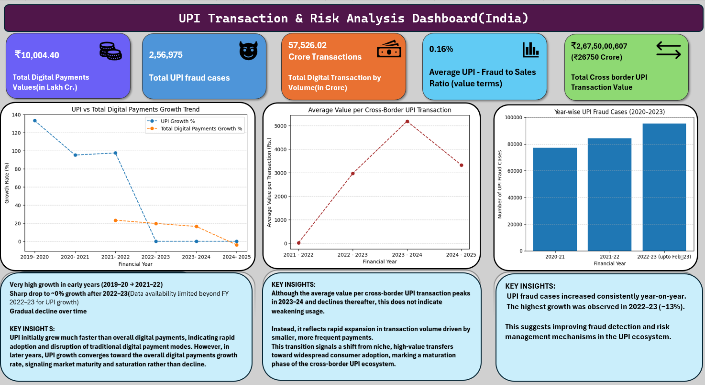
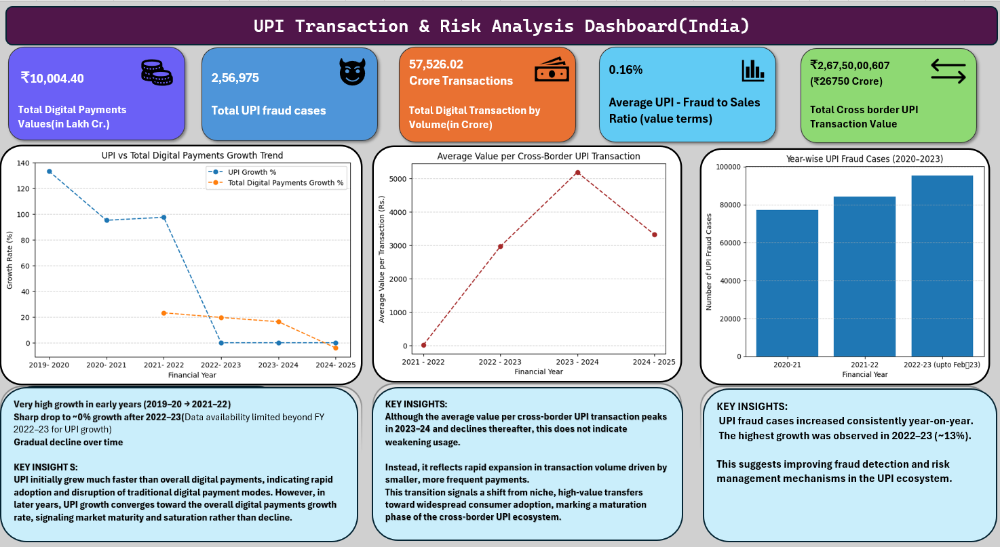
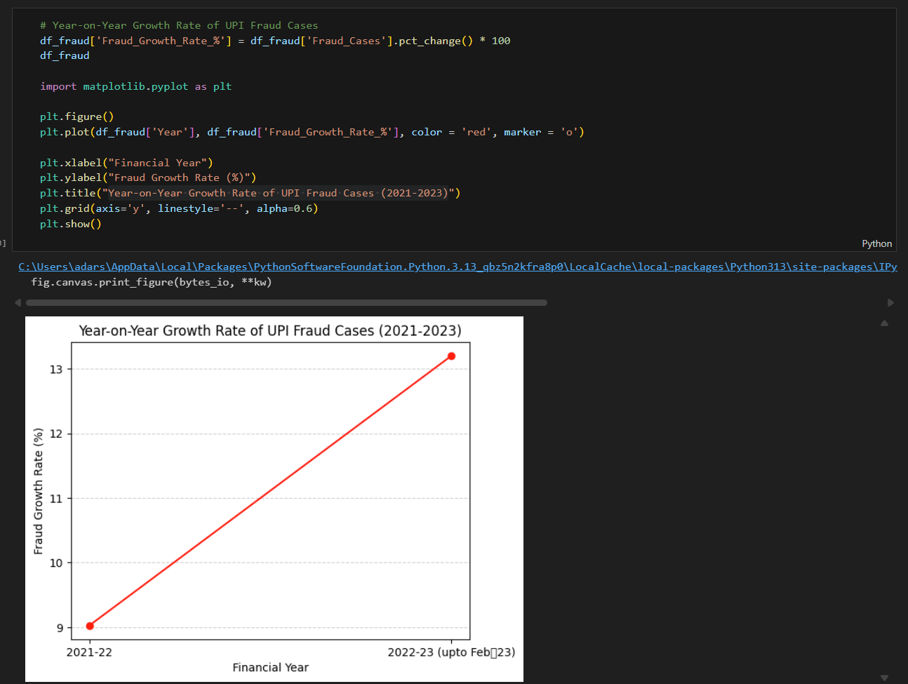
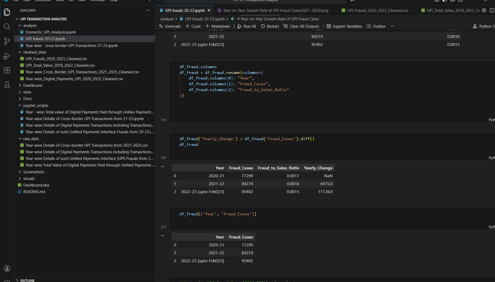
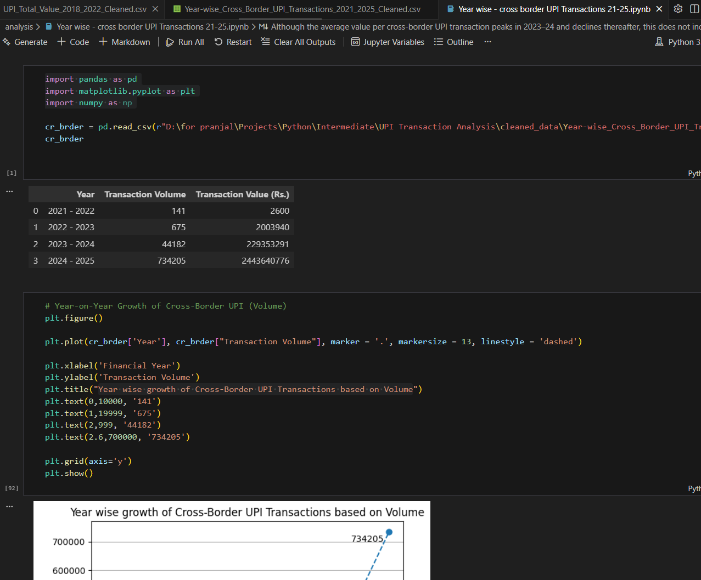
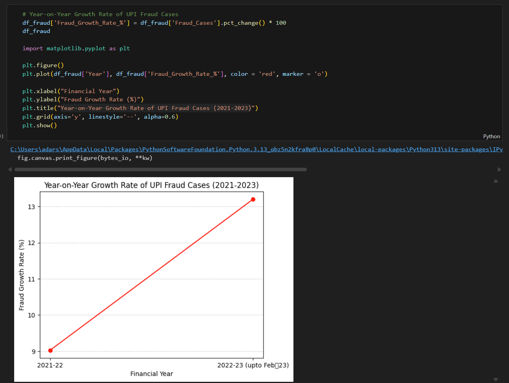
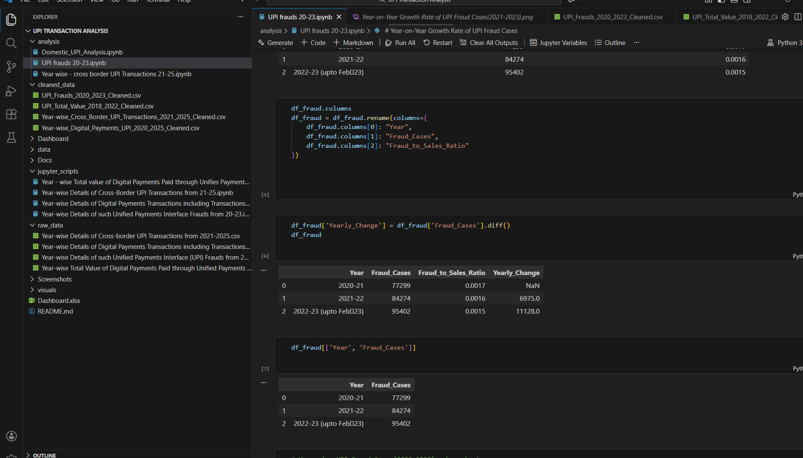
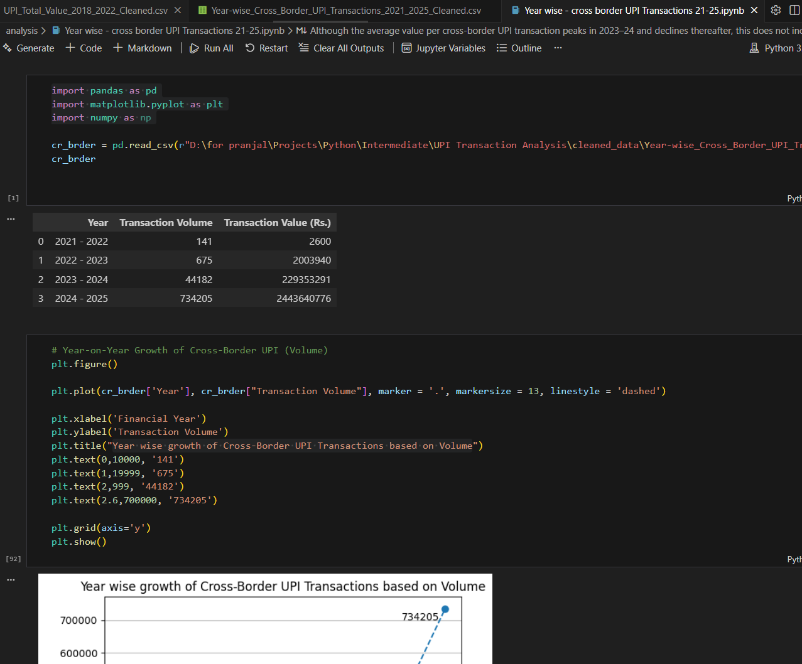

UPI Transaction Analysis
Data Visualization using Excel
Introduction
This UPI Transaction & Risk Analysis project focuses on analyzing the growth, adoption, and risk dynamics of Unified Payments Interface (UPI) transactions in India using publicly available government data. The objective is to study transaction volume and value trends, compare UPI growth with overall digital payments, evaluate cross-border UPI usage, and assess fraud patterns relative to system scale.
By combining data analysis using Python (Pandas, NumPy, Matplotlib) with dashboard-style visualizations, this project provides insights into how rapid UPI adoption transitions into platform maturity while maintaining manageable risk levels. The analysis supports understanding of digital payment evolution, financial inclusion, and risk management within India’s fintech ecosystem.
Objective
Analyze the growth, scale, and adoption of Unified Payments Interface (UPI) transactions in India.
Measure year-on-year trends in digital payment volume and value, including UPI and overall digital payments.
Evaluate cross-border UPI transaction behavior and average transaction value patterns.
Assess UPI fraud trends and calculate risk-related KPIs such as fraud growth and fraud-to-sales ratios.
Build a comprehensive, insight-driven dashboard to demonstrate real-world data analytics and fintech risk analysis skills.
Methodology
- Collected raw UPI, digital payments, cross-border transactions, and fraud data from official government sources.
- Cleaned and standardized datasets using Python (Pandas, NumPy) to ensure consistency across financial years.
- Performed exploratory data analysis, trend analysis, and KPI calculations including growth rates, averages, and ratios.
- Visualized key metrics using Matplotlib to identify adoption trends, risk patterns, and behavioral shifts.
- Designed a dashboard-style layout to present insights clearly for stakeholders and decision-makers.
Results
The analysis revealed rapid early growth in UPI adoption followed by gradual stabilization, indicating platform maturity rather than slowdown. While transaction volumes and values continued to rise sharply, growth rates moderated over time due to base effects. UPI fraud cases increased in absolute terms but remained low relative to transaction scale, highlighting improved system resilience. Cross-border UPI usage showed expanding adoption with a shift toward smaller, more frequent transactions.
Summary
This project demonstrates how data analytics and visualization can be used to evaluate large-scale digital payment systems. By transforming raw public data into meaningful KPIs and insights, the dashboard highlights the evolution of UPI as a mature, scalable, and relatively low-risk payment ecosystem. The project showcases applied skills in Python-based data analysis, financial trend evaluation, and risk assessment within the fintech domain.
Data Sources
Government of India – Open Data Portal (data.gov.in)
Datasets spanning 2018–2025
Links:
Year-wise Total Value of Digital Payments Paid through Unified Payments Interface (UPI) in the Country (2018–2022)
Click here
(2) Year-wise Details of Unified Payments Interface (UPI) Fraud Cases (2020–2023)
Click here
(3) Year-wise Details of Digital Payments Transactions including Transactions through Unified Payments Interface (UPI)
(2020–2025)
Click here
(4)Year-wise Details of Cross-border UPI Transactions (2021–2025)
Click here
 

 





.png)

.png)


.png)
.png)
.png)